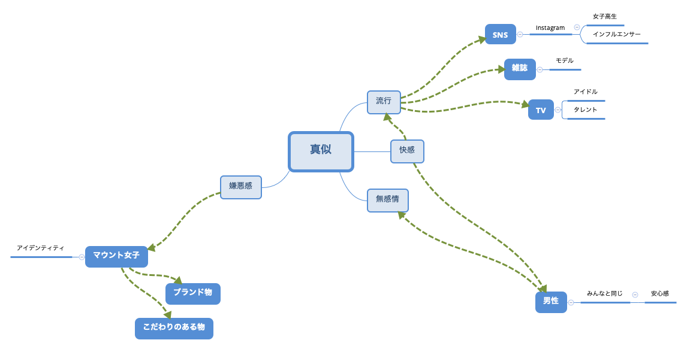

・第一回目の発表で、幼児の模倣についての先行研究を学習。
→幼児の模倣は本能的に行われる発達行動であることがわかった。
・第二回目の発表では、流行意識に関する先行研究を学習。
→男女間で、真似や流行に対する意識の違いがあることがわかった。
①流行に関しての論文を読む
②アンケート対象者を絞り始める
・島根と大阪の女子短大生のファッションに関する意識調査から、流行の取り入れに関して比較検討をする。
・本論文では流行を取り入れて装うことをファッションという言葉で形容している。
・「個性化の時代」と言われる現代、若者は流行をそのまま取り入れるのではなく、自分なりのオリジナルなファッションに変えて着装しているものと思われる。
・調査の結果、島根の女子短大生は大阪に比べて流行に対して消極的であることが明らかになった。（流行の採用時期に関する質問・・流行の最盛期を過ぎてから、流行は採用しない）
・論文の書かれた時期が古すぎるため、SNSなどが発達する前（ファッションを取り入れる最大の情報はファッション誌であった時代）の情報、アンケートであることから現代とは大きく違った結果が得られる可能性がある。
・流行というより、ファッションに関しての論文だった。
・『個性化』という点において、人と違うファッションをしたいですか、流行の色やデザインの服を着たいですか、似合わなくても仲間と同じ服装をすることがありますか、などの質問は興味深いので、自分でアンケートを作る際にも参考にしたい。
アンケート対象者を決めるにあたって、今までの考察を踏まえてマインドマップを作成した。
